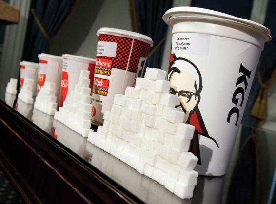
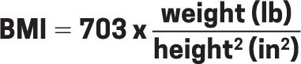
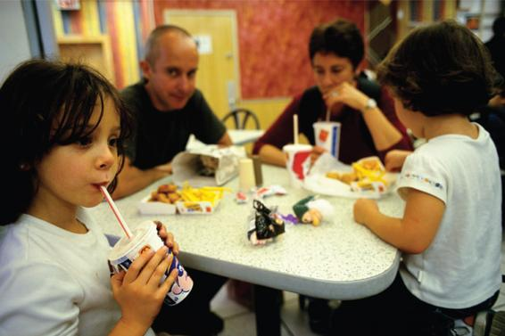

Research on Health, Illness, and Sexuality Today Learn about health patterns in the United States according to social class, gender, and race, and understand the competing explanations for the persistence of these patterns. Understand how society and culture influence sexual practices and attitudes.
Unanswered Questions Understand the state of current research on the link between health and income inequality. Learn about the growth of complementary and alternative medicine (CAM), gendered patterns of body-image concerns, and the debate about the influence of biological factors versus social learning on human sexual orientation.
If you answered d, you would be correct. Some of us might have answered a, thinking that our bodies and minds are handed down to us through our genes; you might have a friend who says that she gets her slender physique from “her mom’s side of the family,” while another friend may say that he was “just born big-boned.” Others might think the answer is b—that our physical and mental health reflect our personal choices about what to eat and drink, our willpower in getting up and going to the gym every morning, or the ways that we choose to cope with stress. Students who have taken many sociology courses might think that c is correct—that social class, including where we live, the foods we can afford, and whether we have access to a doctor or therapist, affects our health and well-being. Each of these answers is partly correct in that each and every one of these things contributes to our physical and emotional health, leading us to the correct response of d.
Aspects of our physical body, including how much we weigh, the diseases we suffer from, and how long we live; our mental health, such as whether we are prone to depression or substance use; and even aspects of our sexuality and sexual behavior reflect a range of social, biological, and economic factors, including our genetic makeup, the activities that fill our day, and even our beliefs about what constitutes a “beautiful” body.
To illustrate this point, let’s think about a social phenomenon that many observers refer to as the “obesity epidemic” in the United States. Obesity is considered the top public health problem facing Americans today. Obesity, or excessive body weight, increases an individual’s risk for a wide range of health problems, including heart disease and diabetes (Haslam and James, 2005; Wang et al., 2011). Yet excessive body weight may also take a social and psychological toll. Overweight and obese Americans are more likely than their thinner peers to experience employment discrimination, discrimination by health care providers, and daily experiences of teasing, insults, and shame (Carr and Friedman, 2005). Negative attitudes toward overweight and obese persons develop as early as elementary school (Puhl and Latner, 2007). In one classic sociological study (Richardson et al., 1961), a sample of 10- and 11-year-old boys and girls were given six images of children and asked to report how much they liked each child. The six drawings included an obese child and children with various physical disabilities and disfigurements. The obese child was ranked dead last—a finding that has been replicated many times in more recent studies (e.g., Latner and Stunkard, 2003; Puhl and Latner, 2007).
Soda and other sugary drinks are blamed for contributing to the obesity epidemic, especially among children and teenagers. Currently, 17 percent of children and 21 percent of teens are obese.
Part of the reason why overweight and obese Americans are the targets of teasing and discrimination is that a thin ideal prevails today. Simply pick up a fashion magazine or turn on a television and it will be clear that, today, beauty is equated with slenderness. But this has not always been the case. In most premodern societies, the ideal female shape was a fleshy one. Thinness was not desirable, partly because it was associated with poverty, starvation, and illness. Even in Europe in the 1600s and 1700s, the ideal female shape was curvaceous—as evident in paintings by Rubens, for example. The notion of slimness as the desirable feminine shape originated among some middle-class groups in the late nineteenth century, but it became generalized as an ideal for most women only recently. A historical examination of the physiques of Miss America winners between 1922 and 1999, for example, shows that for much of the twentieth century, pageant winners had a body weight that would be classified as “normal,” yet in recent years, the majority of winners would be classified as “underweight” using medical guidelines (Rubinstein and Caballero, 2000). As a result, even young girls who are genetically disposed to a fuller figure may work very hard to fight their biology as they strive to achieve a thin ideal (Haberstick et al., 2010). Recent evidence suggests that boys, too, increasingly struggle to maintain a lean and muscular physique (Field et al., 2014).
Sociologists are fascinated with the puzzle facing our nation today. Negative attitudes toward overweight and obese persons persist, yet at the same time, these individuals currently make up the statistical majority of all Americans. According to the Centers for Disease Control and Prevention (CDC), roughly 70 percent of adults are now overweight (see Table 18.1 for technical definitions of weight categories). More than 40 percent of American adults (43 percent of men and 42 percent of women) are currently obese. This proportion varies widely by race; for example, 57 percent of Black women and 44 percent of Hispanic women are now obese, compared with 40 percent of non-Hispanic White women (Hales et al., 2020).
Table 18.1WHAT IS YOUR BODY MASS INDEX?
People are classified into one of four standard weight categories based on their body mass index (BMI), which reflects one’s current height and weight. BMI can be calculated using the following formula:

WEIGHT
BODY MASS CATEGORY INDEX (BMI)
Underweight
less than 18.5
Normal
from 18.5 to 24.9
Overweight
from 25.0 to 29.9
Obese
30.0 or higher
Source: National Heart, Lung, and Blood Institute, 2015.
An even more troubling trend is the increase in the proportion of American children and adolescents who are obese. Between 1976 and 1980, just 6.5 percent of children (ages 6 to 11) and 5 percent of teens (ages 12 to 19) were obese. By contrast, in 2014, 18.4 percent of children and 20.6 percent of adolescents were obese (Hales et al., 2017). If body weight reflected biology alone, then we would expect that the rates of overweight and obese people would be fairly constant across history—because human physiology has changed little throughout the millennia.
The reasons behind the obesity crisis are widely debated. Some argue that the apparent increase in the overweight and obese population is a statistical artifact. The proportion of the U.S. population who are middle-aged has increased rapidly since the mid-1980s as the large baby boom cohort grew older. Middle-aged persons, due to slowing metabolism, are at greater risk of excessive body weight. Others attribute the pattern—especially the childhood obesity increase—to compositional factors. The proportion of children in the United States who are Black or Hispanic is higher today than in earlier decades, and both these ethnic groups are at a much greater risk of becoming overweight than their White peers. Still others argue that the measures used to count and classify obese persons have shifted, thus leading to an excessively high count. Finally, some observers believe that public concern over obesity is blown out of proportion and reflects more of a “moral panic” than a “public health crisis” (Campos et al., 2006; Saguy, 2012).
Most public health experts, however, believe that obesity is a very real problem caused by what Kelly Brownell calls the “obesogenic environment”—or a social environment that unwittingly contributes to weight gain. Among adults today, sedentary desk jobs have replaced physical work such as farming. Children are more likely to spend their after-school hours sitting in front of a computer or television than playing tag or riding bikes around the neighborhood. Parents are pressed for time, given their hectic work and family schedules, and turn to unhealthy fast food rather than home-cooked meals. Restaurants, eager to lure bargain-seeking patrons, provide enormous serving sizes at low prices. A Big Mac is less expensive than a healthy salad in most parts of the country (Brownell and Horgen, 2004).
The social forces that promote high fat and sugar consumption and that restrict the opportunity to exercise are particularly acute for poor persons and ethnic minorities. Small grocery stores in poor neighborhoods rarely sell fresh or low-cost produce. Large grocery stores are scarce in poor inner-city neighborhoods and rural areas, as well as in predominantly African American neighborhoods (Morland et al., 2002). Given the scarcity of high-quality healthy foods in poor neighborhoods, scholars have dubbed these areas “food deserts” (Walker, Keane, and Burke, 2010). Additionally, high crime rates and high levels of traffic in inner-city neighborhoods make exercise in public parks or jogging on city streets potentially dangerous (Brownell and Horgen, 2004).
Why do many parents turn to fast food to feed their families? What are the consequences?
Policy makers and public health professionals have proposed a broad range of solutions to the obesity crisis. Some have (unsuccessfully) proposed practices that place the burden directly on the individual. For example, some schools have considered having a “weight report card,” where children and parents would be told the child’s body mass index (BMI), in an effort to trigger healthy behaviors at home (Dogloff, 2010). Yet most experts endorse solutions that attack the problem at a more macro level, such as making healthy low-cost produce more widely available; providing safe public places for fitness, free exercise classes, and instruction in health and nutrition to poor children and their families; and requiring restaurants and food manufacturers to note clearly the fat and calorie content of their products.
Former First Lady Michelle Obama’s Let’s Move! program is held up as an outstanding initiative because it includes programs to help children and their families maintain healthy lifestyles (White House, 2014). Let’s Move! provides parents with the tools and information they need to make healthier food choices for their children; for instance, an updated food pyramid and new food-package labels will help point consumers to healthy food choices. Increased funding for school lunch and breakfast programs, encouraging school food suppliers to deliver healthy low-fat and low-salt meals to schools, funding inner-city farmers’ markets, and implementing programs to increase children’s fitness levels are all steps that may help eradicate the childhood obesity epidemic. Only in attacking the “public issue” of the obesogenic environment will the private trouble of excessive weight be resolved (Brownell and Horgen, 2004).
Taken together, the “obesity epidemic” debate and its proposed solutions illustrate many core themes of sociology. First, they illustrate the ways in which a “personal trouble,” such as suffering from obesity-related health problems, also reflects “public issues,” such as a social context that prevents poor individuals from buying costly low-fat foods or accessing public parks and other spaces that allow for regular exercise. Second, they reveal that social inequalities based on race, class, and geographic region can shape our bodies. Third, they reveal that no “single-bullet” explanation can account for major social and public health issues; rather, the source of the problem often encompasses a range of biological, social, economic, and technological factors. In fact, in 2014, the Medical College Admissions Test (MCAT) introduced a social-science module, recognizing that future physicians must “consider how income and social status, education, home and work environments and other factors shape health outcomes” (Tran, 2014).
Map 18.1
PERCENTAGE OF U.S. ADULTS CLASSIFIED AS OBESE (BMI > 30), 2018
While more than 20 percent of adults are obese in all states, the South has the highest prevalence of obesity at almost 34 percent. The West has the lowest prevalence at almost 27 percent.
Source: Centers for Disease Control and Prevention, 2018c.
The study of body weight is just one topic investigated by sociologists specializing in the subfield known as sociology of the body. These scholars investigate how and why our bodies and minds are affected by our social experiences and the norms and values of the groups to which we belong. The ways that social factors affect our health was painfully illustrated when the COVID-19 crisis devastated populations worldwide, with low-wage workers like grocery store clerks and nursing home aids and those living in overcrowded housing particularly vulnerable.
Another central theme in the sweeping field of sociology of the body is the increasing separation of the body from “nature.” Our bodies are affected by science and technology in diverse ways, ranging from life-sustaining machines, to the chemicals in our food, to reproductive technologies. A closely related subfield, sociology of sexuality, explores and debates the importance of biological versus social and cultural influences on human sexual behavior, an important facet of sociology of the body. Only recently have sociologists recognized the profound interconnections between social life and the body. Therefore, this field is quite new and exciting. Using these two interrelated frameworks, in this chapter, we analyze the social dimensions of health and illness in the United States and worldwide and examine social and cultural influences on our sexual behavior, identities, and practices.